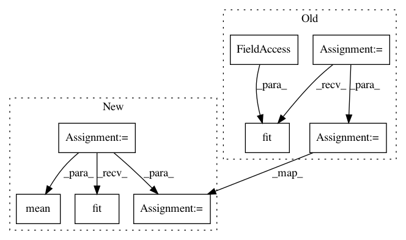

b115f1f721594772ca12e02dc388b1b210a2ee73,experiments/mnist.py,,,#,31
Before Change
(x_train, y_train), (x_test, y_test) = mnist.load_data()
X = np.concatenate((x_train, x_test))
Y = np.concatenate((y_train, y_test))
clf = ImageClassifier(searcher_type=sys.argv[1], path=sys.argv[2], verbose=False)
clf.fit(x_train, y_train)
y = clf.evaluate(x_test, y_test)
print(y)
// MLP for Pima Indians Dataset with 10-fold cross validation
// scores = clf.cross_validate(X, Y, 2)
// print(np.mean(scores))
After Change
x_test = x_test.reshape(x_test.shape + (1,))
X = np.concatenate((x_train, x_test))
Y = np.concatenate((y_train, y_test))
clf = ImageClassifier(searcher_type="bayesian", path="~/temp_models", verbose=True)
clf.fit(x_train, y_train, time_limit=12*60*60)
// clf.final_fit(x_train, y_train)
y = clf.evaluate(x_test, y_test)
print(y)
// MLP for Pima Indians Dataset with 10-fold cross validation
scores = clf.cross_validate(X, Y, 10)
print(scores)
print(np.mean(scores))
print(np.std(scores))
// split into input (X) and output (Y) variables
In pattern: SUPERPATTERN
Frequency: 4
Non-data size: 8
Instances
Project Name: keras-team/autokeras
Commit Name: b115f1f721594772ca12e02dc388b1b210a2ee73
Time: 2018-05-02
Author: jin@tamu.edu
File Name: experiments/mnist.py
Class Name:
Method Name:
Project Name: nilearn/nilearn
Commit Name: ba96096f784a73ce0d14b0b72e757c0fdbf331db
Time: 2015-07-28
Author: elvis.dohmatob@inria.fr
File Name: examples/decoding/plot_oasis_vbm_space_net.py
Class Name:
Method Name:
Project Name: nilearn/nilearn
Commit Name: ea5d191f7f71b6fa927a96ef4e785c762a54d5db
Time: 2015-07-28
Author: elvis.dohmatob@inria.fr
File Name: examples/decoding/plot_oasis_vbm_space_net.py
Class Name:
Method Name: